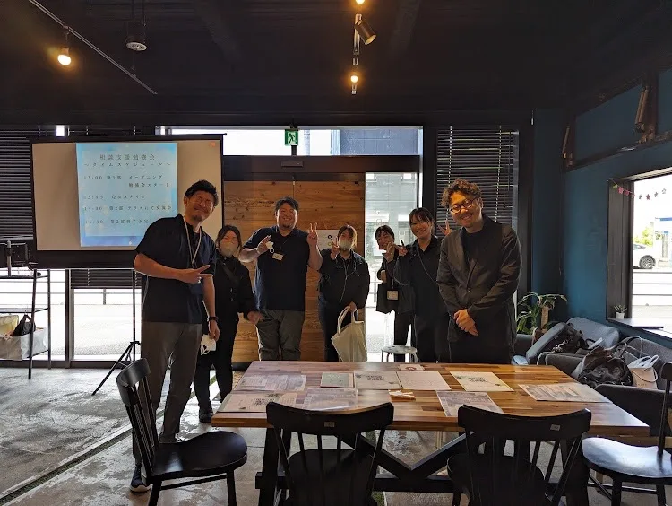
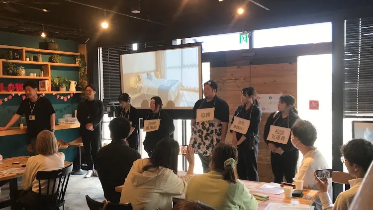
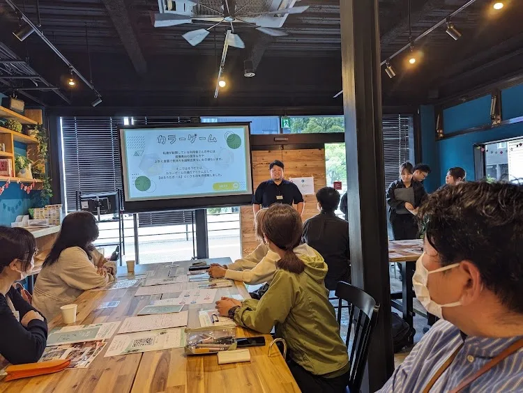
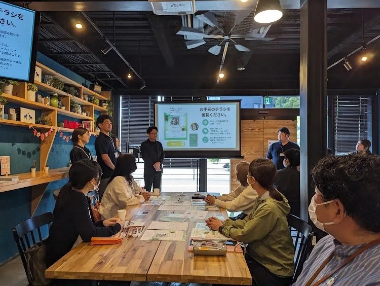

お知らせ
5月14日(水) 13:00~ 四季のいろ WB さんのカフェスペースをお借りして【相談支援勉強会】を開催させていただきました。
はるうたスタッフみんなで試行錯誤を重ね、緊張しながらも本番に臨んで無事に成功させることができました。四季のいろ WB様をはじめ、ご参加いただいた皆様のご協力のおかげです。心より感謝申し上げます。
勉強会の後は様々な地域の相談支援員さんと交流を深めさせていただくことも出来、とても有意義で思い出に残る素敵な1日になりました。
内容や構成などまだまだ反省点はありますが、次はよりパワーアップしたはるうたをお見せ出来るように、更にメンバーとの結束を固め頑張っていきたいなと思える1日でした。
四季のいろ WBの皆様、ご参加頂きました相談支援員の皆様、本当にありがとうございました。



